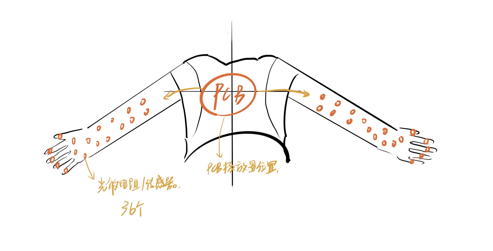
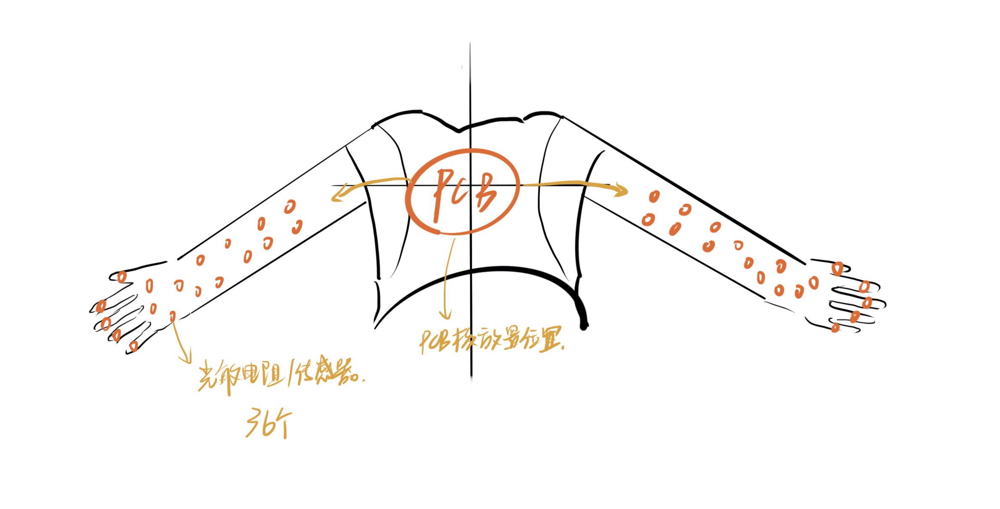
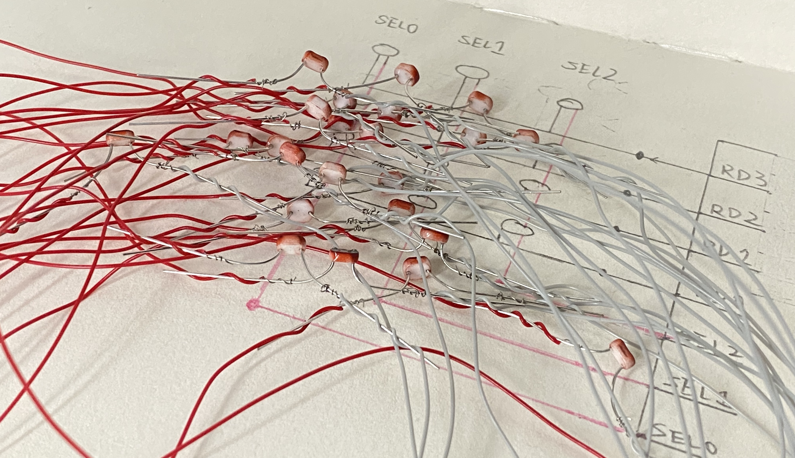
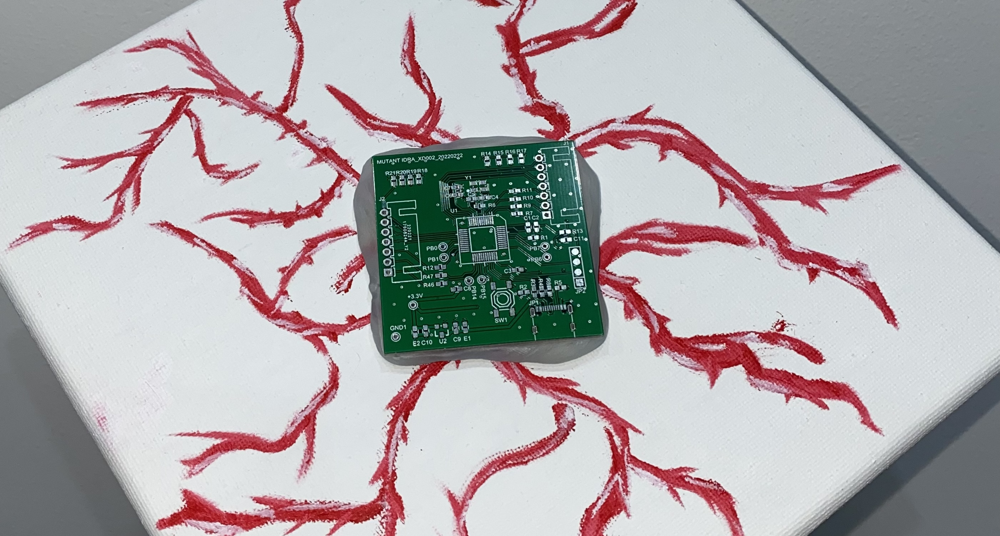
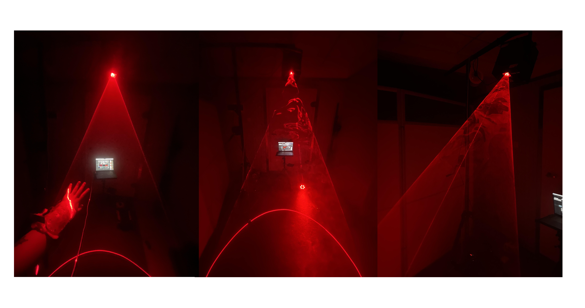
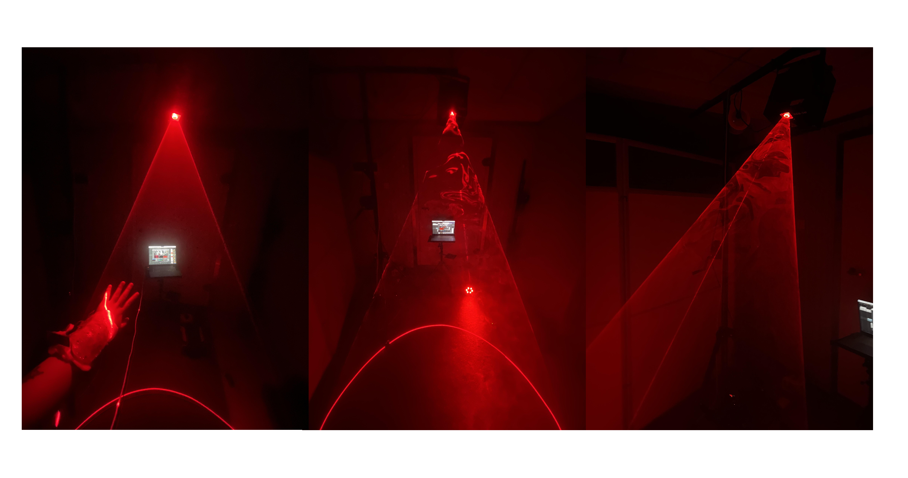
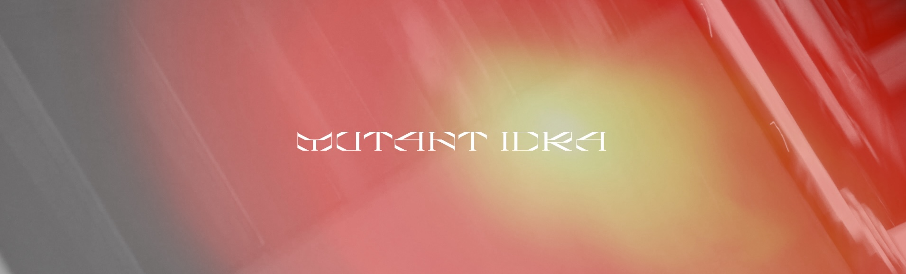

MUTANT IDRA is an audiovisual interactive installation based on a light-controlled system.
Light-sensitive components receive optical signals and convert them into MIDI messages
that trigger sound. The captured sound parameters then activate and transform the visual imagery of the work.
Initial Concept Sketch
 

Derived Design Sketches
The central theme of MUTANT IDRA is tearing and regeneration.
The hydra, a multicellular cnidarian with eight to ten slender tentacles, becomes the biological starting point of this work.
Its network-like neural structure resembles the shape of a human hand. By abstracting the forms of hydra and blood, the installation explores ideas of unity and independence, separation and reformation, and the possibility of breaking conventional systems through continual regeneration.


The hydra, a multicellular cnidarian with eight to ten slender tentacles, becomes the biological starting point of this work.
Its network-like neural structure resembles the shape of a human hand. By abstracting the forms of hydra and blood, the installation explores ideas of unity and independence, separation and reformation, and the possibility of breaking conventional systems through continual regeneration.
Chip and Circuit Design with Light-Sensitive Components
On a personal level, this work reflects my own process of introspection.
Human emotions are complex and cannot be described with simple words.
A passionate person may become silent in certain environments, a decisive person may hesitate, and someone filled with sadness may still find strength.
For me, music is a place where I can let go of external judgments.
Creating this piece became a way to step outside fixed patterns of thought.
Human emotions are complex and cannot be described with simple words.
A passionate person may become silent in certain environments, a decisive person may hesitate, and someone filled with sadness may still find strength.
For me, music is a place where I can let go of external judgments.
Creating this piece became a way to step outside fixed patterns of thought.
 

Lighting Design
Red is an element that I have never abandoned in my previous works.
It exists in blood and symbolizes circulation, vitality, and emotional intensity.
In this installation, red appears in the visuals, in the controlled light sources, and within the musical atmosphere.
It may flow gently, intertwine and shift, or burst out with force.
It exists in blood and symbolizes circulation, vitality, and emotional intensity.
In this installation, red appears in the visuals, in the controlled light sources, and within the musical atmosphere.
It may flow gently, intertwine and shift, or burst out with force.


Chip and Circuit Design
The concept of Reverse Generation plays an important role in this project.
It refers to a creative method in which an already-generated element becomes the condition for generating change in another medium.
For example, the frequency of synthesized sound may create visual imagery.
Drawn lines may determine the coordinates of light.
Programmed lighting may trigger musical pitch.
This process suggests that artistic materials have no fixed origin or ending.
They can be used and transformed repeatedly until a circular system is formed.
It refers to a creative method in which an already-generated element becomes the condition for generating change in another medium.
For example, the frequency of synthesized sound may create visual imagery.
Drawn lines may determine the coordinates of light.
Programmed lighting may trigger musical pitch.
This process suggests that artistic materials have no fixed origin or ending.
They can be used and transformed repeatedly until a circular system is formed.


Wearable Model Design
Reverse Generation introduces new perspectives and dynamics for creators.
New media art, with its flexibility and innovative spirit, provides a foundation for re-shaping artistic expression. Digital and reproduction technologies allow artistic forms to evolve and transform.
This method not only creates reverse logic between media but also offers inspiration for artistic practice and technological development.
New media art, with its flexibility and innovative spirit, provides a foundation for re-shaping artistic expression. Digital and reproduction technologies allow artistic forms to evolve and transform.
This method not only creates reverse logic between media but also offers inspiration for artistic practice and technological development.
The light-controlled multimedia system integrates both hearing and vision,
making it suitable for exhibitions and live performances.
Through an experimental performance approach, light, music, and visual imagery become inseparable.
The use of light-sensitive technology breaks traditional performance structures and introduces freshness and aesthetic tension into the visual presentation.
Through an experimental performance approach, light, music, and visual imagery become inseparable.
The use of light-sensitive technology breaks traditional performance structures and introduces freshness and aesthetic tension into the visual presentation.

Visual Interaction Design
Experiments with this system reveal the strong potential for
reshaping relationships between media.
Reverse Generation opens a broad imaginative space for new media art.
Through this system, one can witness how artistic media merge and transform with the help of technology.
Reverse Generation opens a broad imaginative space for new media art.
Through this system, one can witness how artistic media merge and transform with the help of technology.

In exploring collaborations across new media, many creative methods become possible
through technological development.
The inspiration for this system also began with the idea of Reverse Generation.
The natural human impulse to dance to music is reversed as movement becomes the generator of sound.
Within the system, the performer’s gestures trigger both sound and visuals.
This mode of activation makes interdisciplinary collaboration with dance possible, forming an interactive work that combines music, movement, and imagery.
The inspiration for this system also began with the idea of Reverse Generation.
The natural human impulse to dance to music is reversed as movement becomes the generator of sound.
Within the system, the performer’s gestures trigger both sound and visuals.
This mode of activation makes interdisciplinary collaboration with dance possible, forming an interactive work that combines music, movement, and imagery.

The system brings together sound, two-dimensional visual imagery, and three-dimensional lighting.
Light design transforms visual information from two dimensions into three.
The relationship between light, visuals, and music is tightly interconnected, creating a strong sense of presence.
Art is a process in which perception moves from the heart to the eyes and back to the heart.
Through sensory symbols, the work creates emotional resonance for the audience.
Light design transforms visual information from two dimensions into three.
The relationship between light, visuals, and music is tightly interconnected, creating a strong sense of presence.
Art is a process in which perception moves from the heart to the eyes and back to the heart.
Through sensory symbols, the work creates emotional resonance for the audience.

Throughout the development of this system, music production,
MIDI controller design, sound synthesis, three-dimensional modeling,
visual design, wearable object design, circuit design,
and programming all play important roles.
Cross-media interaction is one of the most significant approaches in contemporary electronic music.
By combining interactive art and electronic sound, the system offers a new form of artistic expression that aligns with the needs of our time.

Cross-media interaction is one of the most significant approaches in contemporary electronic music.
By combining interactive art and electronic sound, the system offers a new form of artistic expression that aligns with the needs of our time.
The integration of art and technology opens a pathway for interdisciplinary collaboration.
Art needs technology, and technology advances through artistic ideas.
Experimental art is not only about creating new works but also about exploring the unknown.
When traditional artistic forms reach saturation, experimental art breaks through habitual ways of seeing and becomes a catalyst for the evolution of the art field.
Art needs technology, and technology advances through artistic ideas.
Experimental art is not only about creating new works but also about exploring the unknown.
When traditional artistic forms reach saturation, experimental art breaks through habitual ways of seeing and becomes a catalyst for the evolution of the art field.
Demonstration of the interactive performance system in action